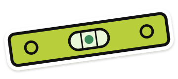

geotech SR, north pad
SR-24-0142 · {{statusText}}
docbuilder
{{m.text}}
docbuilder
{{m.text}}{{q.step}}changing your answer
{{q.title}}
{{q.why}}
that's everything I need.
It'll be about 30 pages. You can keep chatting while I write, and change any answer above first if you like.
quick one while I write
should the contractor price standby for weather days?
{{activeTitle}}
Welcome back. This one is saved. Ask me to change anything, or open the document.
open the document